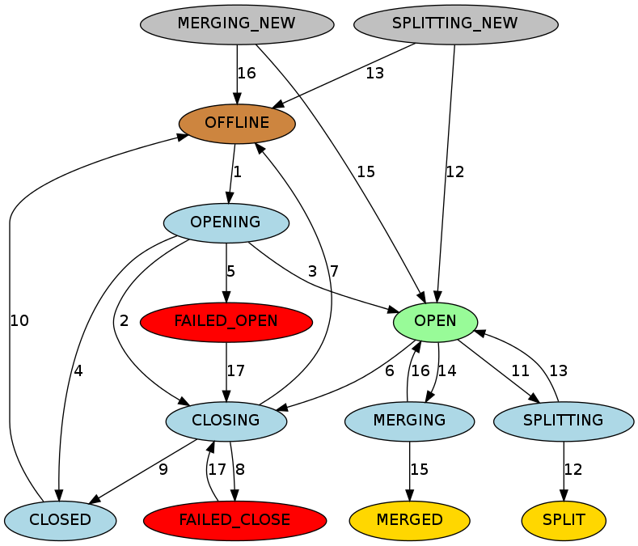

Regions are the basic element of availability and distribution for tables, and are comprised of a Store per Column Family. The heirarchy of objects is as follows:
Table(HBase table)Region(Regions for the table)Store(Store per ColumnFamily for each Region for the table)MemStore(MemStore for each Store for each Region for the table)StoreFile(StoreFiles for each Store for each Region for the table)Block(Blocks within a StoreFile within a Store for each Region for the table)
For a description of what HBase files look like when written to HDFS, see Section 15.7.2, “Browsing HDFS for HBase Objects”.
In general, HBase is designed to run with a small (20-200) number of relatively large (5-20Gb) regions per server. The considerations for this are as follows:
Typically you want to keep your region count low on HBase for numerous reasons. Usually right around 100 regions per RegionServer has yielded the best results. Here are some of the reasons below for keeping region count low:
MSLAB requires 2mb per memstore (that's 2mb per family per region). 1000 regions that have 2 families each is 3.9GB of heap used, and it's not even storing data yet. NB: the 2MB value is configurable.
If you fill all the regions at somewhat the same rate, the global memory usage makes it that it forces tiny flushes when you have too many regions which in turn generates compactions. Rewriting the same data tens of times is the last thing you want. An example is filling 1000 regions (with one family) equally and let's consider a lower bound for global memstore usage of 5GB (the region server would have a big heap). Once it reaches 5GB it will force flush the biggest region, at that point they should almost all have about 5MB of data so it would flush that amount. 5MB inserted later, it would flush another region that will now have a bit over 5MB of data, and so on. This is currently the main limiting factor for the number of regions; see Section 17.9.2.2, “Number of regions per RS - upper bound” for detailed formula.
The master as is is allergic to tons of regions, and will take a lot of time assigning them and moving them around in batches. The reason is that it's heavy on ZK usage, and it's not very async at the moment (could really be improved -- and has been imporoved a bunch in 0.96 hbase).
In older versions of HBase (pre-v2 hfile, 0.90 and previous), tons of regions on a few RS can cause the store file index to rise, increasing heap usage and potentially creating memory pressure or OOME on the RSs
Another issue is the effect of the number of regions on mapreduce jobs; it is typical to have one mapper per HBase region. Thus, hosting only 5 regions per RS may not be enough to get sufficient number of tasks for a mapreduce job, while 1000 regions will generate far too many tasks.
See Section 17.9.2, “Determining region count and size” for configuration guidelines.
This section describes how Regions are assigned to RegionServers.
When HBase starts regions are assigned as follows (short version):
The Master invokes the AssignmentManager upon startup.
The AssignmentManager looks at the existing region assignments in META.
If the region assignment is still valid (i.e., if the RegionServer is still online) then the assignment is kept.
If the assignment is invalid, then the LoadBalancerFactory is invoked to assign the
region. The DefaultLoadBalancer will randomly assign the region to a RegionServer.
META is updated with the RegionServer assignment (if needed) and the RegionServer start codes (start time of the RegionServer process) upon region opening by the RegionServer.
When a RegionServer fails:
The regions immediately become unavailable because the RegionServer is down.
The Master will detect that the RegionServer has failed.
The region assignments will be considered invalid and will be re-assigned just like the startup sequence.
In-flight queries are re-tried, and not lost.
Operations are switched to a new RegionServer within the following amount of time:
ZooKeeper session timeout + split time + assignment/replay time
Regions can be periodically moved by the Section 9.5.4.1, “LoadBalancer”.
HBase maintains a state for each region and persists the state in META. The state of the META region itself is persisted in ZooKeeper. You can see the states of regions in transition in the Master web UI. Following is the list of possible region states.
Possible Region States
OFFLINE: the region is offline and not opening
OPENING: the region is in the process of being opened
OPEN: the region is open and the region server has notified the master
FAILED_OPEN: the region server failed to open the region
CLOSING: the region is in the process of being closed
CLOSED: the region server has closed the region and notified the master
FAILED_CLOSE: the region server failed to close the region
SPLITTING: the region server notified the master that the region is splitting
SPLIT: the region server notified the master that the region has finished splitting
SPLITTING_NEW: this region is being created by a split which is in progress
MERGING: the region server notified the master that this region is being merged with another region
MERGED: the region server notified the master that this region has been merged
MERGING_NEW: this region is being created by a merge of two regions
Figure 9.1. Region State Transitions
|  |
This graph shows all allowed transitions a region can undergo. In the graph, each node is a state. A node has a color based on the state type, for readability. A directed line in the graph is a possible state transition.
Graph Legend
Brown: Offline state, a special state that can be transient (after closed before opening), terminal (regions of disabled tables), or initial (regions of newly created tables)
Palegreen: Online state that regions can serve requests
Lightblue: Transient states
Red: Failure states that need OPS attention
Gold: Terminal states of regions split/merged
Grey: Initial states of regions created through split/merge
Region State Transitions Explained
The master moves a region from OFFLINE to
OPENING state and tries to assign the region to a region
server. The region server may or may not have received the open region request. The
master retries sending the open region request to the region server until the RPC
goes through or the master runs out of retries. After the region server receives the
open region request, the region server begins opening the region.
If the master is running out of retries, the master prevents the region server
from opening the region by moving the region to CLOSING state and
trying to close it, even if the region server is starting to open the region.
After the region server opens the region, it continues to try to notify the
master until the master moves the region to OPEN state and
notifies the region server. The region is now open.
If the region server cannot open the region, it notifies the master. The master
moves the region to CLOSED state and tries to open the region on
a different region server.
If the master cannot open the region on any of a certain number of regions, it
moves the region to FAILED_OPEN state, and takes no further
action until an operator intervenes from the HBase shell, or the server is
dead.
The master moves a region from OPEN to
CLOSING state. The region server holding the region may or may
not have received the close region request. The master retries sending the close
request to the server until the RPC goes through or the master runs out of
retries.
If the region server is not online, or throws
NotServingRegionException, the master moves the region to
OFFLINE state and re-assigns it to a different region
server.
If the region server is online, but not reachable after the master runs out of
retries, the master moves the region to FAILED_CLOSE state and
takes no further action until an operator intervenes from the HBase shell, or the
server is dead.
If the region server gets the close region request, it closes the region and
notifies the master. The master moves the region to CLOSED state
and re-assigns it to a different region server.
Before assigning a region, the master moves the region to
OFFLINE state automatically if it is in
CLOSED state.
When a region server is about to split a region, it notifies the master. The
master moves the region to be split from OPEN to
SPLITTING state and add the two new regions to be created to
the region server. These two regions are in SPLITING_NEW state
initially.
After notifying the master, the region server starts to split the region. Once
past the point of no return, the region server notifies the master again so the
master can update the META. However, the master does not update the region states
until it is notified by the server that the split is done. If the split is
successful, the splitting region is moved from SPLITTING to
SPLIT state and the two new regions are moved from
SPLITTING_NEW to OPEN state.
If the split fails, the splitting region is moved from
SPLITTING back to OPEN state, and the two
new regions which were created are moved from SPLITTING_NEW to
OFFLINE state.
When a region server is about to merge two regions, it notifies the master
first. The master moves the two regions to be merged from OPEN to
MERGINGstate, and adds the new region which will hold the
contents of the merged regions region to the region server. The new region is in
MERGING_NEW state initially.
After notifying the master, the region server starts to merge the two regions.
Once past the point of no return, the region server notifies the master again so the
master can update the META. However, the master does not update the region states
until it is notified by the region server that the merge has completed. If the merge
is successful, the two merging regions are moved from MERGING to
MERGED state and the new region is moved from
MERGING_NEW to OPEN state.
If the merge fails, the two merging regions are moved from
MERGING back to OPEN state, and the new
region which was created to hold the contents of the merged regions is moved from
MERGING_NEW to OFFLINE state.
For regions in FAILED_OPEN or FAILED_CLOSE
states , the master tries to close them again when they are reassigned by an
operator via HBase Shell.
Over time, Region-RegionServer locality is achieved via HDFS block replication. The HDFS client does the following by default when choosing locations to write replicas:
First replica is written to local node
Second replica is written to a random node on another rack
Third replica is written on the same rack as the second, but on a different node chosen randomly
Subsequent replicas are written on random nodes on the cluster. See Replica Placement: The First Baby Steps on this page: HDFS Architecture
Thus, HBase eventually achieves locality for a region after a flush or a compaction. In a RegionServer failover situation a RegionServer may be assigned regions with non-local StoreFiles (because none of the replicas are local), however as new data is written in the region, or the table is compacted and StoreFiles are re-written, they will become "local" to the RegionServer.
For more information, see Replica Placement: The First Baby Steps on this page: HDFS Architecture and also Lars George's blog on HBase and HDFS locality.
Regions split when they reach a configured threshold. Below we treat the topic in short. For a longer exposition, see Apache HBase Region Splitting and Merging by our Enis Soztutar.
Splits run unaided on the RegionServer; i.e. the Master does not participate. The RegionServer splits a region, offlines the split region and then adds the daughter regions to META, opens daughters on the parent's hosting RegionServer and then reports the split to the Master. See Section 2.6.2.7, “Managed Splitting” for how to manually manage splits (and for why you might do this)
The default split policy can be overwritten using a custom RegionSplitPolicy (HBase 0.94+). Typically a custom split policy should extend HBase's default split policy: ConstantSizeRegionSplitPolicy.
The policy can set globally through the HBaseConfiguration used or on a per table basis:
HTableDescriptor myHtd = ...; myHtd.setValue(HTableDescriptor.SPLIT_POLICY, MyCustomSplitPolicy.class.getName());
It is possible to manually split your table, either at table creation (pre-splitting), or at a later time as an administrative action. You might choose to split your region for one or more of the following reasons. There may be other valid reasons, but the need to manually split your table might also point to problems with your schema design.
Reasons to Manually Split Your Table
Your data is sorted by timeseries or another similar algorithm that sorts new data at the end of the table. This means that the Region Server holding the last region is always under load, and the other Region Servers are idle, or mostly idle. See also Section 6.3.2, “ Monotonically Increasing Row Keys/Timeseries Data ”.
You have developed an unexpected hotspot in one region of your table. For instance, an application which tracks web searches might be inundated by a lot of searches for a celebrity in the event of news about that celebrity. See Section 14.8.8, “Anti-Pattern: One Hot Region” for more discussion about this particular scenario.
After a big increase to the number of Region Servers in your cluster, to get the load spread out quickly.
Before a bulk-load which is likely to cause unusual and uneven load across regions.
See Section 2.6.2.7, “Managed Splitting” for a discussion about the dangers and possible benefits of managing splitting completely manually.
The goal of splitting your table manually is to improve the chances of balancing the load across the cluster in situations where good rowkey design alone won't get you there. Keeping that in mind, the way you split your regions is very dependent upon the characteristics of your data. It may be that you already know the best way to split your table. If not, the way you split your table depends on what your keys are like.
If your rowkeys start with a letter or number, you can split your table at letter or number boundaries. For instance, the following command creates a table with regions that split at each vowel, so the first region has A-D, the second region has E-H, the third region has I-N, the fourth region has O-V, and the fifth region has U-Z.
hbase> create 'test_table', 'f1', SPLITS=> ['a', 'e', 'i', 'o', 'u']
The following command splits an existing table at split point '2'.
hbase> split 'test_table', '2'
You can also split a specific region by referring to its ID. You can find the
region ID by looking at either the table or region in the Web UI. It will be a
long number such as
t2,1,1410227759524.829850c6eaba1acc689480acd8f081bd.. The
format is table_name,start_key,region_idTo split that
region into two, as close to equally as possible (at the nearest row boundary),
issue the following command.
hbase> split 't2,1,1410227759524.829850c6eaba1acc689480acd8f081bd.'
The split key is optional. If it is omitted, the table or region is split in half.
The following example shows how to use the RegionSplitter to create 10 regions, split at hexadecimal values.
hbase org.apache.hadoop.hbase.util.RegionSplitter test_table HexStringSplit -c 10 -f f1
The RegionSplitter tool is provided with HBase, and uses a SplitAlgorithm to determine split points for you. As
parameters, you give it the algorithm, desired number of regions, and column
families. It includes two split algorithms. The first is the HexStringSplit algorithm, which assumes the row keys are
hexadecimal strings. The second, UniformSplit, assumes the row keys are random byte arrays. You will
probably need to develop your own SplitAlgorithm, using the provided ones as
models.
Both Master and Regionserver participate in the event of online region merges. Client sends merge RPC to master, then master moves the regions together to the same regionserver where the more heavily loaded region resided, finally master send merge request to this regionserver and regionserver run the region merges. Similar with process of region splits, region merges run as a local transaction on the regionserver, offlines the regions and then merges two regions on the file system, atomically delete merging regions from META and add merged region to the META, opens merged region on the regionserver and reports the merge to Master at last.
An example of region merges in the hbase shell
$ hbase> merge_region 'ENCODED_REGIONNAME', 'ENCODED_REGIONNAME'
hbase> merge_region 'ENCODED_REGIONNAME', 'ENCODED_REGIONNAME', true
It's an asynchronous operation and call returns immediately without waiting merge completed. Passing 'true' as the optional third parameter will force a merge ('force' merges regardless else merge will fail unless passed adjacent regions. 'force' is for expert use only)
A Store hosts a MemStore and 0 or more StoreFiles (HFiles). A Store corresponds to a column family for a table for a given region.
The MemStore holds in-memory modifications to the Store. Modifications are Cells/KeyValues. When a flush is requested, the current memstore is moved to a snapshot and is cleared. HBase continues to serve edits from the new memstore and backing snapshot until the flusher reports that the flush succeeded. At this point, the snapshot is discarded. Note that when the flush happens, Memstores that belong to the same region will all be flushed.
A MemStore flush can be triggered under any of the conditions listed below. The minimum flush unit is per region, not at individual MemStore level.
When a MemStore reaches the value specified by
hbase.hregion.memstore.flush.size, all MemStores that belong to
its region will be flushed out to disk.
When overall memstore usage reaches the value specified by
hbase.regionserver.global.memstore.upperLimit, MemStores from
various regions will be flushed out to disk to reduce overall MemStore usage in a
Region Server. The flush order is based on the descending order of a region's
MemStore usage. Regions will have their MemStores flushed until the overall MemStore
usage drops to or slightly below
hbase.regionserver.global.memstore.lowerLimit.
When the number of HLog per region server reaches the value specified in
hbase.regionserver.max.logs, MemStores from various regions
will be flushed out to disk to reduce HLog count. The flush order is based on time.
Regions with the oldest MemStores are flushed first until HLog count drops below
hbase.regionserver.max.logs.
When a client issues a scan against a table, HBase generates
RegionScanner objects, one per region, to serve the scan request.
The RegionScanner object contains a list of
StoreScanner objects, one per column family.
Each StoreScanner object further contains a list of
StoreFileScanner objects, corresponding to each StoreFile and
HFile of the corresponding column family, and a list of
KeyValueScanner objects for the MemStore.
The two lists are merge into one, which is sorted in ascending order with the scan object for the MemStore at the end of the list.
When a StoreFileScanner object is constructed, it is associated
with a MultiVersionConsistencyControl read point, which is the
current memstoreTS, filtering out any new updates beyond the read
point.
StoreFiles are where your data lives.
The hfile file format is based on the SSTable file described in the BigTable [2006] paper and on Hadoop's tfile (The unit test suite and the compression harness were taken directly from tfile). Schubert Zhang's blog post on HFile: A Block-Indexed File Format to Store Sorted Key-Value Pairs makes for a thorough introduction to HBase's hfile. Matteo Bertozzi has also put up a helpful description, HBase I/O: HFile.
For more information, see the HFile source code. Also see Section H.2, “ HBase file format with inline blocks (version 2) ” for information about the HFile v2 format that was included in 0.92.
To view a textualized version of hfile content, you can do use
the org.apache.hadoop.hbase.io.hfile.HFile
tool. Type the following to see usage:
$ ${HBASE_HOME}/bin/hbase org.apache.hadoop.hbase.io.hfile.HFile For
example, to view the content of the file
hdfs://10.81.47.41:8020/hbase/TEST/1418428042/DSMP/4759508618286845475,
type the following:
$ ${HBASE_HOME}/bin/hbase org.apache.hadoop.hbase.io.hfile.HFile -v -f hdfs://10.81.47.41:8020/hbase/TEST/1418428042/DSMP/4759508618286845475 If
you leave off the option -v to see just a summary on the hfile. See
usage for other things to do with the HFile
tool.
For more information of what StoreFiles look like on HDFS with respect to the directory structure, see Section 15.7.2, “Browsing HDFS for HBase Objects”.
StoreFiles are composed of blocks. The blocksize is configured on a per-ColumnFamily basis.
Compression happens at the block level within StoreFiles. For more information on compression, see Appendix E, Compression and Data Block Encoding In HBase.
For more information on blocks, see the HFileBlock source code.
The KeyValue class is the heart of data storage in HBase. KeyValue wraps a byte array and takes offsets and lengths into passed array at where to start interpreting the content as KeyValue.
The KeyValue format inside a byte array is:
keylength
valuelength
key
value
The Key is further decomposed as:
rowlength
row (i.e., the rowkey)
columnfamilylength
columnfamily
columnqualifier
timestamp
keytype (e.g., Put, Delete, DeleteColumn, DeleteFamily)
KeyValue instances are not split across blocks. For example, if there is an 8 MB KeyValue, even if the block-size is 64kb this KeyValue will be read in as a coherent block. For more information, see the KeyValue source code.
To emphasize the points above, examine what happens with two Puts for two different columns for the same row:
Put #1: rowkey=row1, cf:attr1=value1
Put #2: rowkey=row1, cf:attr2=value2
Even though these are for the same row, a KeyValue is created for each column:
Key portion for Put #1:
rowlength ------------> 4
row -----------------> row1
columnfamilylength ---> 2
columnfamily --------> cf
columnqualifier ------> attr1
timestamp -----------> server time of Put
keytype -------------> Put
Key portion for Put #2:
rowlength ------------> 4
row -----------------> row1
columnfamilylength ---> 2
columnfamily --------> cf
columnqualifier ------> attr2
timestamp -----------> server time of Put
keytype -------------> Put
It is critical to understand that the rowkey, ColumnFamily, and column (aka columnqualifier) are embedded within the KeyValue instance. The longer these identifiers are, the bigger the KeyValue is.
Ambiguous Terminology
A StoreFile is a facade of HFile. In terms of compaction, use of StoreFile seems to have prevailed in the past.
A Store is the same thing as a ColumnFamily. StoreFiles are related to a Store, or ColumnFamily.
If you want to read more about StoreFiles versus HFiles and Stores versus ColumnFamilies, see HBASE-11316.
When the MemStore reaches a given size
(hbase.hregion.memstore.flush.size), it flushes its contents to a
StoreFile. The number of StoreFiles in a Store increases over time.
Compaction is an operation which reduces the number of
StoreFiles in a Store, by merging them together, in order to increase performance on
read operations. Compactions can be resource-intensive to perform, and can either help
or hinder performance depending on many factors.
Compactions fall into two categories: minor and major. Minor and major compactions differ in the following ways.
Minor compactions usually select a small number of small, adjacent StoreFiles and rewrite them as a single StoreFile. Minor compactions do not drop (filter out) deletes or expired versions, because of potential side effects. See Compaction and Deletions and Compaction and Versions for information on how deletes and versions are handled in relation to compactions. The end result of a minor compaction is fewer, larger StoreFiles for a given Store.
The end result of a major compaction is a single StoreFile per Store. Major compactions also process delete markers and max versions. See Compaction and Deletions and Compaction and Versions for information on how deletes and versions are handled in relation to compactions.
Compaction and Deletions. When an explicit deletion occurs in HBase, the data is not actually deleted. Instead, a tombstone marker is written. The tombstone marker prevents the data from being returned with queries. During a major compaction, the data is actually deleted, and the tombstone marker is removed from the StoreFile. If the deletion happens because of an expired TTL, no tombstone is created. Instead, the expired data is filtered out and is not written back to the compacted StoreFile.
Compaction and Versions. When you create a Column Family, you can specify the maximum number of versions
to keep, by specifying HColumnDescriptor.setMaxVersions(int
versions). The default value is 3. If more versions
than the specified maximum exist, the excess versions are filtered out and not written
back to the compacted StoreFile.
In some situations, older versions can be inadvertently resurrected if a newer version is explicitly deleted. See Section 5.9.3.2, “Major compactions change query results” for a more in-depth explanation. This situation is only possible before the compaction finishes.
In theory, major compactions improve performance. However, on a highly loaded system, major compactions can require an inappropriate number of resources and adversely affect performance. In a default configuration, major compactions are scheduled automatically to run once in a 7-day period. This is sometimes inappropriate for systems in production. You can manage major compactions manually. See Section 2.6.2.8, “Managed Compactions”.
Compactions do not perform region merges. See Section 17.2.2, “Merge” for more information on region merging.
Compacting large StoreFiles, or too many StoreFiles at once, can cause more IO load than your cluster is able to handle without causing performance problems. The method by which HBase selects which StoreFiles to include in a compaction (and whether the compaction is a minor or major compaction) is called the compaction policy.
Prior to HBase 0.96.x, there was only one compaction policy. That original
compaction policy is still available as
RatioBasedCompactionPolicy The new compaction default
policy, called ExploringCompactionPolicy, was subsequently
backported to HBase 0.94 and HBase 0.95, and is the default in HBase 0.96 and newer.
It was implemented in HBASE-7842. In
short, ExploringCompactionPolicy attempts to select the best
possible set of StoreFiles to compact with the least amount of work, while the
RatioBasedCompactionPolicy selects the first set that meets
the criteria.
Regardless of the compaction policy used, file selection is controlled by several configurable parameters and happens in a multi-step approach. These parameters will be explained in context, and then will be given in a table which shows their descriptions, defaults, and implications of changing them.
When the MemStore gets too large, it needs to flush its contents to a StoreFile.
However, a Store can only have hbase.hstore.blockingStoreFiles
files, so the MemStore needs to wait for the number of StoreFiles to be reduced by
one or more compactions. However, if the MemStore grows larger than
hbase.hregion.memstore.flush.size, it is not able to flush its
contents to a StoreFile. If the MemStore is too large and the number of StpreFo;es
is also too high, the algorithm is said to be "stuck". The compaction algorithm
checks for this "stuck" situation and provides mechanisms to alleviate it.
The ExploringCompactionPolicy algorithm considers each possible set of adjacent StoreFiles before choosing the set where compaction will have the most benefit.
One situation where the ExploringCompactionPolicy works especially well is when you are bulk-loading data and the bulk loads create larger StoreFiles than the StoreFiles which are holding data older than the bulk-loaded data. This can "trick" HBase into choosing to perform a major compaction each time a compaction is needed, and cause a lot of extra overhead. With the ExploringCompactionPolicy, major compactions happen much less frequently because minor compactions are more efficient.
In general, ExploringCompactionPolicy is the right choice for most situations, and thus is the default compaction policy. You can also use ExploringCompactionPolicy along with Section 9.7.7.7.3, “Experimental: Stripe Compactions”.
The logic of this policy can be examined in
hbase-server/src/main/java/org/apache/hadoop/hbase/regionserver/compactions/ExploringCompactionPolicy.java.
The following is a walk-through of the logic of the
ExploringCompactionPolicy.
Make a list of all existing StoreFiles in the Store. The rest of the algorithm filters this list to come up with the subset of HFiles which will be chosen for compaction.
If this was a user-requested compaction, attempt to perform the requested compaction type, regardless of what would normally be chosen. Note that even if the user requests a major compaction, it may not be possible to perform a major compaction. This may be because not all StoreFiles in the Column Family are available to compact or because there are too many Stores in the Column Family.
Some StoreFiles are automatically excluded from consideration. These include:
StoreFiles that are larger than
hbase.hstore.compaction.max.size
StoreFiles that were created by a bulk-load operation which explicitly
excluded compaction. You may decide to exclude StoreFiles resulting from
bulk loads, from compaction. To do this, specify the
hbase.mapreduce.hfileoutputformat.compaction.exclude
parameter during the bulk load operation.
Iterate through the list from step 1, and make a list of all potential sets
of StoreFiles to compact together. A potential set is a grouping of
hbase.hstore.compaction.min contiguous StoreFiles in the
list. For each set, perform some sanity-checking and figure out whether this is
the best compaction that could be done:
If the number of StoreFiles in this set (not the size of the StoreFiles)
is fewer than hbase.hstore.compaction.min or more than
hbase.hstore.compaction.max, take it out of
consideration.
Compare the size of this set of StoreFiles with the size of the smallest possible compaction that has been found in the list so far. If the size of this set of StoreFiles represents the smallest compaction that could be done, store it to be used as a fall-back if the algorithm is "stuck" and no StoreFiles would otherwise be chosen. See Section 9.7.7.7.1.1, “Being Stuck”.
Do size-based sanity checks against each StoreFile in this set of StoreFiles.
If the size of this StoreFile is larger than
hbase.hstore.compaction.max.size, take it out of
consideration.
If the size is greater than or equal to
hbase.hstore.compaction.min.size, sanity-check it
against the file-based ratio to see whether it is too large to be
considered. The sanity-checking is successful if:
There is only one StoreFile in this set, or
For each StoreFile, its size multiplied by
hbase.hstore.compaction.ratio (or
hbase.hstore.compaction.ratio.offpeak if
off-peak hours are configured and it is during off-peak hours) is
less than the sum of the sizes of the other HFiles in the
set.
If this set of StoreFiles is still in consideration, compare it to the previously-selected best compaction. If it is better, replace the previously-selected best compaction with this one.
When the entire list of potential compactions has been processed, perform the best compaction that was found. If no StoreFiles were selected for compaction, but there are multiple StoreFiles, assume the algorithm is stuck (see Section 9.7.7.7.1.1, “Being Stuck”) and if so, perform the smallest compaction that was found in step 3.
The RatioBasedCompactionPolicy was the only compaction policy prior to HBase
0.96, though ExploringCompactionPolicy has now been backported to HBase 0.94 and
0.95. To use the RatioBasedCompactionPolicy rather than the
ExploringCompactionPolicy, set
hbase.hstore.defaultengine.compactionpolicy.class to
RatioBasedCompactionPolicy in the
hbase-site.xml file. To switch back to the
ExploringCompactionPolicy, remove the setting from the
hbase-site.xml.
The following section walks you through the algorithm used to select StoreFiles for compaction in the RatioBasedCompactionPolicy.
The first phase is to create a list of all candidates for compaction. A list is created of all StoreFiles not already in the compaction queue, and all StoreFiles newer than the newest file that is currently being compacted. This list of StoreFiles is ordered by the sequence ID. The sequence ID is generated when a Put is appended to the write-ahead log (WAL), and is stored in the metadata of the HFile.
Check to see if the algorithm is stuck (see Section 9.7.7.7.1.1, “Being Stuck”, and if so, a major compaction is forced. This is a key area where Section 9.7.7.7.1.2, “The ExploringCompactionPolicy Algorithm” is often a better choice than the RatioBasedCompactionPolicy.
If the compaction was user-requested, try to perform the type of compaction
that was requested. Note that a major compaction may not be possible if all
HFiles are not available for compaction or if too may StoreFiles exist (more
than hbase.hstore.compaction.max).
Some StoreFiles are automatically excluded from consideration. These include:
StoreFiles that are larger than
hbase.hstore.compaction.max.size
StoreFiles that were created by a bulk-load operation which explicitly
excluded compaction. You may decide to exclude StoreFiles resulting from
bulk loads, from compaction. To do this, specify the
hbase.mapreduce.hfileoutputformat.compaction.exclude
parameter during the bulk load operation.
The maximum number of StoreFiles allowed in a major compaction is controlled
by the hbase.hstore.compaction.max parameter. If the list
contains more than this number of StoreFiles, a minor compaction is performed
even if a major compaction would otherwise have been done. However, a
user-requested major compaction still occurs even if there are more than
hbase.hstore.compaction.max StoreFiles to compact.
If the list contains fewer than
hbase.hstore.compaction.min StoreFiles to compact, a minor
compaction is aborted. Note that a major compaction can be performed on a single
HFile. Its function is to remove deletes and expired versions, and reset
locality on the StoreFile.
The value of the hbase.hstore.compaction.ratio parameter
is multiplied by the sum of StoreFiles smaller than a given file, to determine
whether that StoreFile is selected for compaction during a minor compaction. For
instance, if hbase.hstore.compaction.ratio is 1.2, FileX is 5 mb, FileY is 2 mb,
and FileZ is 3 mb:
5 <= 1.2 x (2 + 3) or 5 <= 6
In this scenario, FileX is eligible for minor compaction. If FileX were 7
mb, it would not be eligible for minor compaction. This ratio favors smaller
StoreFile. You can configure a different ratio for use in off-peak hours, using
the parameter hbase.hstore.compaction.ratio.offpeak, if you
also configure hbase.offpeak.start.hour and
hbase.offpeak.end.hour.
If the last major compaction was too long ago and there is more than one
StoreFile to be compacted, a major compaction is run, even if it would otherwise
have been minor. By default, the maximum time between major compactions is 7
days, plus or minus a 4.8 hour period, and determined randomly within those
parameters. Prior to HBase 0.96, the major compaction period was 24 hours. See
hbase.hregion.majorcompaction in the table below to tune or
disable time-based major compactions.
This table contains the main configuration parameters for compaction. This list
is not exhaustive. To tune these parameters from the defaults, edit the
hbase-default.xml file. For a full list of all configuration
parameters available, see Section 2.4, “Configuration Files”
| Parameter | Description | Default |
|---|---|---|
| hbase.hstore.compaction.min | The minimum number of StoreFiles which must be eligible for compaction before compaction can run. The goal of tuning In previous versions of HBase, the parameter
| 3 |
| hbase.hstore.compaction.max | The maximum number of StoreFiles which will be selected for a single minor compaction, regardless of the number of eligible StoreFiles. Effectively, the value of
| 10 |
| hbase.hstore.compaction.min.size | A StoreFile smaller than this size will always be eligible for
minor compaction. StoreFiles this size or larger are evaluated by
Because this limit represents the "automatic include" limit for all StoreFiles smaller than this value, this value may need to be reduced in write-heavy environments where many files in the 1-2 MB range are being flushed, because every StoreFile will be targeted for compaction and the resulting StoreFiles may still be under the minimum size and require further compaction. If this parameter is lowered, the ratio check is triggered more quickly. This addressed some issues seen in earlier versions of HBase but changing this parameter is no longer necessary in most situations. | 128 MB |
| hbase.hstore.compaction.max.size | An StoreFile larger than this size will be excluded from
compaction. The effect of raising
| Long.MAX_VALUE |
| hbase.hstore.compaction.ratio | For minor compaction, this ratio is used to determine whether a
given StoreFile which is larger than
A large ratio, such as A moderate value of between 1.0 and 1.4 is recommended. When tuning this value, you are balancing write costs with read costs. Raising the value (to something like 1.4) will have more write costs, because you will compact larger StoreFiles. However, during reads, HBase will need to seek through fewer StpreFo;es to accomplish the read. Consider this approach if you cannot take advantage of Section 14.6.4, “Bloom Filters”. Alternatively, you can lower this value to something like 1.0 to reduce the background cost of writes, and use Section 14.6.4, “Bloom Filters” to limit the number of StoreFiles touched during reads. For most cases, the default value is appropriate. | 1.2F |
| hbase.hstore.compaction.ratio.offpeak | The compaction ratio used during off-peak compactions, if off-peak
hours are also configured (see below). Expressed as a floating-point
decimal. This allows for more aggressive (or less aggressive, if you set it
lower than hbase.hstore.compaction.ratio) compaction
during a set time period. Ignored if off-peak is disabled (default). This
works the same as hbase.hstore.compaction.ratio. | 5.0F |
| hbase.offpeak.start.hour | The start of off-peak hours, expressed as an integer between 0 and 23,
inclusive. Set to -1 to disable off-peak. | -1 (disabled) |
| hbase.offpeak.end.hour | The end of off-peak hours, expressed as an integer between 0 and 23,
inclusive. Set to -1 to disable off-peak. | -1 (disabled) |
| hbase.regionserver.thread.compaction.throttle | There are two different thread pools for compactions, one for
large compactions and the other for small compactions. This helps to keep
compaction of lean tables (such as | 2 x hbase.hstore.compaction.max x hbase.hregion.memstore.flush.size (which defaults to 128) |
| hbase.hregion.majorcompaction | Time between major compactions, expressed in milliseconds. Set to
0 to disable time-based automatic major compactions. User-requested and
size-based major compactions will still run. This value is multiplied by
| 7 days (604800000 milliseconds) |
| hbase.hregion.majorcompaction.jitter | A multiplier applied to
| .50F |
This section has been preserved for historical reasons and refers to the way compaction worked prior to HBase 0.96.x. You can still use this behavior if you enable Section 9.7.7.7.1.3, “RatioBasedCompactionPolicy Algorithm” For information on the way that compactions work in HBase 0.96.x and later, see Section 9.7.7.7, “Compaction”.
To understand the core algorithm for StoreFile selection, there is some ASCII-art in the Store source code that will serve as useful reference. It has been copied below:
/* normal skew: * * older ----> newer * _ * | | _ * | | | | _ * --|-|- |-|- |-|---_-------_------- minCompactSize * | | | | | | | | _ | | * | | | | | | | | | | | | * | | | | | | | | | | | | */
Important knobs:
hbase.hstore.compaction.ratio Ratio used in compaction file
selection algorithm (default 1.2f).
hbase.hstore.compaction.min (.90
hbase.hstore.compactionThreshold) (files) Minimum number of StoreFiles per Store
to be selected for a compaction to occur (default 2).
hbase.hstore.compaction.max (files) Maximum number of
StoreFiles to compact per minor compaction (default 10).
hbase.hstore.compaction.min.size (bytes) Any StoreFile smaller
than this setting with automatically be a candidate for compaction. Defaults to
hbase.hregion.memstore.flush.size (128 mb).
hbase.hstore.compaction.max.size (.92) (bytes) Any StoreFile
larger than this setting with automatically be excluded from compaction (default
Long.MAX_VALUE).
The minor compaction StoreFile selection logic is size based, and selects a file
for compaction when the file <= sum(smaller_files) *
hbase.hstore.compaction.ratio.
This example mirrors an example from the unit test
TestCompactSelection.
hbase.hstore.compaction.ratio = 1.0f
hbase.hstore.compaction.min = 3 (files)
hbase.hstore.compaction.max = 5 (files)
hbase.hstore.compaction.min.size = 10 (bytes)
hbase.hstore.compaction.max.size = 1000 (bytes)
The following StoreFiles exist: 100, 50, 23, 12, and 12 bytes apiece (oldest to newest). With the above parameters, the files that would be selected for minor compaction are 23, 12, and 12.
Why?
100 --> No, because sum(50, 23, 12, 12) * 1.0 = 97.
50 --> No, because sum(23, 12, 12) * 1.0 = 47.
23 --> Yes, because sum(12, 12) * 1.0 = 24.
12 --> Yes, because the previous file has been included, and because this does not exceed the the max-file limit of 5
12 --> Yes, because the previous file had been included, and because this does not exceed the the max-file limit of 5.
This example mirrors an example from the unit test
TestCompactSelection.
hbase.hstore.compaction.ratio = 1.0f
hbase.hstore.compaction.min = 3 (files)
hbase.hstore.compaction.max = 5 (files)
hbase.hstore.compaction.min.size = 10 (bytes)
hbase.hstore.compaction.max.size = 1000 (bytes)
The following StoreFiles exist: 100, 25, 12, and 12 bytes apiece (oldest to newest). With the above parameters, no compaction will be started.
Why?
100 --> No, because sum(25, 12, 12) * 1.0 = 47
25 --> No, because sum(12, 12) * 1.0 = 24
12 --> No. Candidate because sum(12) * 1.0 = 12, there are only 2 files to compact and that is less than the threshold of 3
12 --> No. Candidate because the previous StoreFile was, but there are not enough files to compact
This example mirrors an example from the unit test
TestCompactSelection.
hbase.hstore.compaction.ratio = 1.0f
hbase.hstore.compaction.min = 3 (files)
hbase.hstore.compaction.max = 5 (files)
hbase.hstore.compaction.min.size = 10 (bytes)
hbase.hstore.compaction.max.size = 1000 (bytes)
The following StoreFiles exist: 7, 6, 5, 4, 3, 2, and 1 bytes apiece (oldest to newest). With the above parameters, the files that would be selected for minor compaction are 7, 6, 5, 4, 3.
Why?
7 --> Yes, because sum(6, 5, 4, 3, 2, 1) * 1.0 = 21. Also, 7 is less than the min-size
6 --> Yes, because sum(5, 4, 3, 2, 1) * 1.0 = 15. Also, 6 is less than the min-size.
5 --> Yes, because sum(4, 3, 2, 1) * 1.0 = 10. Also, 5 is less than the min-size.
4 --> Yes, because sum(3, 2, 1) * 1.0 = 6. Also, 4 is less than the min-size.
3 --> Yes, because sum(2, 1) * 1.0 = 3. Also, 3 is less than the min-size.
2 --> No. Candidate because previous file was selected and 2 is less than the min-size, but the max-number of files to compact has been reached.
1 --> No. Candidate because previous file was selected and 1 is less than the min-size, but max-number of files to compact has been reached.
This information is now included in the configuration parameter table in ???.
Stripe compactions is an experimental feature added in HBase 0.98 which aims to improve compactions for large regions or non-uniformly distributed row keys. In order to achieve smaller and/or more granular compactions, the StoreFiles within a region are maintained separately for several row-key sub-ranges, or "stripes", of the region. The stripes are transparent to the rest of HBase, so other operations on the HFiles or data work without modification.
Stripe compactions change the HFile layout, creating sub-regions within regions. These sub-regions are easier to compact, and should result in fewer major compactions. This approach alleviates some of the challenges of larger regions.
Stripe compaction is fully compatible with Section 9.7.7.7, “Compaction” and works in conjunction with either the ExploringCompactionPolicy or RatioBasedCompactionPolicy. It can be enabled for existing tables, and the table will continue to operate normally if it is disabled later.
Consider using stripe compaction if you have either of the following:
Large regions. You can get the positive effects of smaller regions without additional overhead for MemStore and region management overhead.
Non-uniform keys, such as time dimension in a key. Only the stripes receiving the new keys will need to compact. Old data will not compact as often, if at all
Performance Improvements. Performance testing has shown that the performance of reads improves somewhat, and variability of performance of reads and writes is greatly reduced. An overall long-term performance improvement is seen on large non-uniform-row key regions, such as a hash-prefixed timestamp key. These performance gains are the most dramatic on a table which is already large. It is possible that the performance improvement might extend to region splits.
You can enable stripe compaction for a table or a column family, by setting its
hbase.hstore.engine.class to
org.apache.hadoop.hbase.regionserver.StripeStoreEngine. You
also need to set the hbase.hstore.blockingStoreFiles to a high
number, such as 100 (rather than the default value of 10).
Procedure 9.4. Enable Stripe Compaction
If the table already exists, disable the table.
Run one of following commands in the HBase shell. Replace the table name
orders_table with the name of your table.
alter 'orders_table', CONFIGURATION => {'hbase.hstore.engine.class' => 'org.apache.hadoop.hbase.regionserver.StripeStoreEngine', 'hbase.hstore.blockingStoreFiles' => '100'}alter 'orders_table', {NAME => 'blobs_cf', CONFIGURATION => {'hbase.hstore.engine.class' => 'org.apache.hadoop.hbase.regionserver.StripeStoreEngine', 'hbase.hstore.blockingStoreFiles' => '100'}}create 'orders_table', 'blobs_cf', CONFIGURATION => {'hbase.hstore.engine.class' => 'org.apache.hadoop.hbase.regionserver.StripeStoreEngine', 'hbase.hstore.blockingStoreFiles' => '100'}
Configure other options if needed. See Section 9.7.7.7.4.2, “Configuring Stripe Compaction” for more information.
Enable the table.
Procedure 9.5. Disable Stripe Compaction
Disable the table.
Set the hbase.hstore.engine.class option to either nil or
org.apache.hadoop.hbase.regionserver.DefaultStoreEngine.
Either option has the same effect.
alter 'orders_table', CONFIGURATION => {'hbase.hstore.engine.class' => ''}
Enable the table.
When you enable a large table after changing the store engine either way, a major compaction will likely be performed on most regions. This is not necessary on new tables.
Each of the settings for stripe compaction should be configured at the table or column family, after disabling the table. If you use HBase shell, the general command pattern is as follows:
alter 'orders_table', CONFIGURATION => {'key' => 'value', ..., 'key' => 'value'}}
You can configure your stripe sizing bsaed upon your region sizing. By default, your new regions will start with one stripe. On the next compaction after the stripe has grown too large (16 x MemStore flushes size), it is split into two stripes. Stripe splitting continues as the region grows, until the region is large enough to split.
You can improve this pattern for your own data. A good rule is to aim for a stripe size of at least 1 GB, and about 8-12 stripes for uniform row keys. For example, if your regions are 30 GB, 12 x 2.5 GB stripes might be a good starting point.
Table 9.1. Stripe Sizing Settings
| Setting | Notes |
|---|---|
hbase.store.stripe.initialStripeCount
|
The number of stripes to create when stripe compaction is enabled. You can use it as follows:
|
hbase.store.stripe.sizeToSplit
| The maximum size a stripe grows before splitting. Use this in
conjunction with hbase.store.stripe.splitPartCount to
control the target stripe size (sizeToSplit = splitPartsCount * target
stripe size), according to the above sizing considerations. |
hbase.store.stripe.splitPartCount
| The number of new stripes to create when splitting a stripe. The default is 2, which is appropriate for most cases. For non-uniform row keys, you can experiment with increasing the number to 3 or 4, to isolate the arriving updates into narrower slice of the region without additional splits being required. |
By default, the flush creates several files from one MemStore, according to existing stripe boundaries and row keys to flush. This approach minimizes write amplification, but can be undesirable if the MemStore is small and there are many stripes, because the files will be too small.
In this type of situation, you can set
hbase.store.stripe.compaction.flushToL0 to
true. This will cause a MemStore flush to create a single
file instead. When at least
hbase.store.stripe.compaction.minFilesL0 such files (by
default, 4) accumulate, they will be compacted into striped files.
All the settings that apply to normal compactions (see ???) apply to stripe compactions.
The exceptions are the minimum and maximum number of files, which are set to
higher values by default because the files in stripes are smaller. To control
these for stripe compactions, use
hbase.store.stripe.compaction.minFiles and
hbase.store.stripe.compaction.maxFiles, rather than
hbase.hstore.compaction.min and
hbase.hstore.compaction.max.